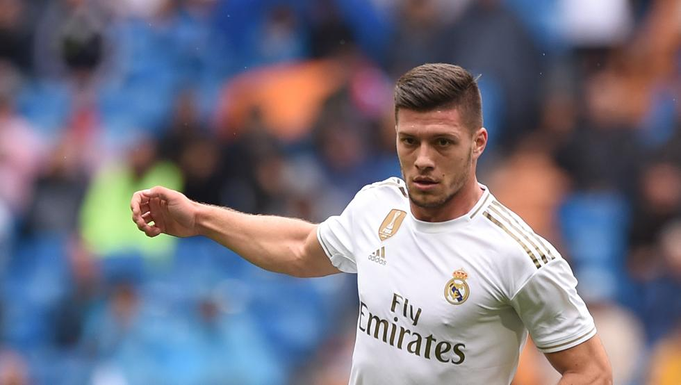

Otkako je Luka Jović rešio da se vrati u Ajntraht iz Frankfurta na pozajmicu i tako završi prvu epizodu u Real Madridu - srpski napadač je u centru pažnje nemačke javnosti.
Tri pogotka na dva meča u Bundesligi na kojima je igrao tek po 30 minuta bila su mu dovoljna da ponovo zaludi Frankfurt i pokaže Madriđanima da i te kako ima šta da pokaže.

Zbog svega toga, Ajntraht je rešio da u utorak napravi konferenciju za medije posvećenu samo i isključivo Luki Jovića, njegovom povratku u klub, svemu što se dešavalo u Real Madridu u prethodnih godinu i po dana, kao i eventualnim potezima u budućnosti.
Jović je otkrio da je još prošlog leta mogao da stigne u Ajntraht, da je u Realu imao slabu komunikaciju sa trenerom Zinedinom Zidanom, a otkrio je i u kakvom klubu bi voleo da nastupi naredne godine. "Imao sam mnogo pehova u Madridu i povreda i privatnih problema za koje jesam i za koje nisam kriv. Hteo sam da se vratim ovde da igram i da budem srećan. To je prednost za igrača, kada imam poverenje trenera i kada igram često", počeo je Jović na početku obraćanja medijima.
Nemačke novinare je interesovalo koliko je Jović napredovao u Real Madridu u prethodnih godinu dana. "Sigurno da sam mnogo napredovao samo jer sam trenirao sa njima. To su veliki profesionalci i među najboljim igračima na svetu na svojim pozicijama. Sigurno da sam pokupio neke fore, da sam došao iskusniji i u razgovoru sa trenerom oko povratka u Ajntraht smo pričali da imam utisak da sam napredovao iako nisam igrao. Pričali smo i da će mi biti potrebno vreme da se vratim u formu, u kondiciju", otkrio je Jović.
On je dodao da je pozitivno iznenađen kvalitetom Ajntrahta i da je na višem nivou nego pre dve godine. Upitan o tome kako bi uporedio Zidana i Adolfa Hitera, trenera Ajntrahta, Jović je dao zanimljiv odgovor. "Ne bih sada ulazio u detalje. Sigurno je da su oni fenomenalni treneri. Za Zidana sam već rekao da je vrlo iskren i fenomenalan čovek. Sa Adijem imam bolju komunikaciju zato što obojica pričamo engleski. U Španiji nisam mogao da napravim tu komunikaciju sa Zidanom. On ne priča engleski, ja ne pričam španski... Ali obojica su sjajni treneri i odlične osobe."
Jović je istakao da i dalje nije spreman da igra 90 minuta i otkrio da je to problem koji vuče još od vremena kada je imao korona virus. "Imam bolove u mišićima koje vučem neko vreme, posle korone imam problema sa tim mišićem, i nisam u potpunosti spreman. Odluka je na treneru, videćemo kada će biti pravi trenutak. Nećemo se mi dogovoriti kada ću ja igrati, nego će to on odlučiti", jasan je srpski napadač. Bivši igrač Crvene zvezde je istakao da mu je drago što među navijačima Ajntrahta vlada euforija zbog njegovog povratka, ali su nemački novinari najviše bili zainteresovani za priču o Real Madridu. Kao na primer - zašto nije uspeo u "kraljevskom klubu"?
"Nemam neki poseban odgovor na to pitanje. Nisam toliko puno ni igrao, nisam dobio utakmice u kontinuitetu i jako je teško da se uđe u formu, naročito za napadača sa malim brojem minuta. Veći je pritisak tamo, drugačije je naravno. Ekipe igraju drugačije protiv Reala i brane se. Kada imate rezultat onda se malo i vi branite, kada uđete u igru nemate toliko prilika za gol... Ovde je drugačije i osećao sam da bi ovo mogao da bude pravi potez u ovom trenutku."
(AMA)